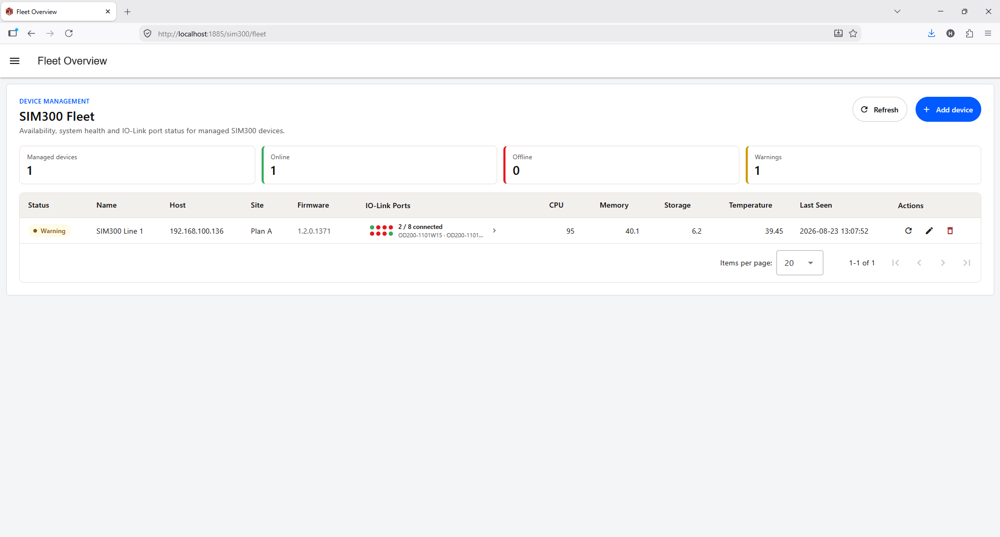
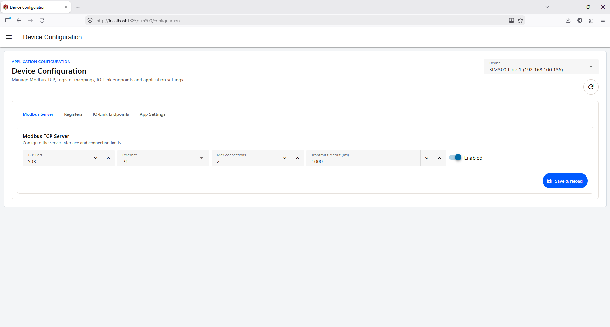
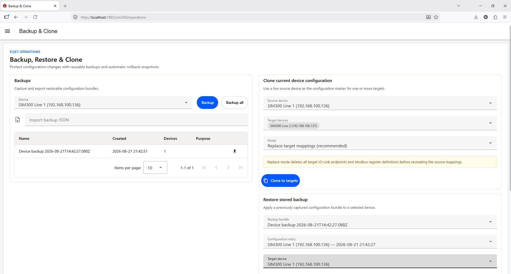
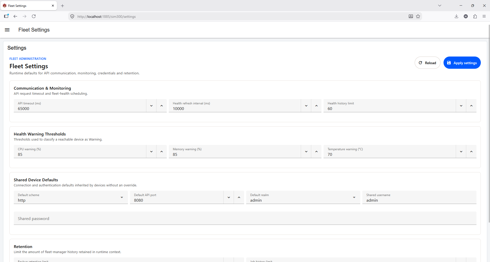

Usage Manual v1.0.0
SIM300 Fleet Manager for Node-RED
A Node-RED Dashboard for near-realtime monitoring, audit, backup, cloning, and restoring settings across multiple SIM300 devices.
http://<device-ip>:8080. Compatible with SIM300 IO-Link Modbus TCP Server application 1.1.0.http://<device-ip>:8080. Compatible with SIM300 IO-Link Modbus TCP Server applications 1.1.0 and 1.2.2.Start Here
| Task | Go to |
|---|---|
| Install the Fleet Manager | Requirements and installation |
| Watch the fleet | Fleet Overview |
| Configure a SIM300 | Device Configuration guide |
| Save or copy settings | Backup, cloning, and restoring |
Contents
- 1. Requirements
- 2. Install and open the Fleet Manager
- 3. Add devices
- 4. Monitor the fleet
- 5. Configure a device
- 6. Backup, clone, and restore
- 7. Fleet Settings
- 8. Troubleshooting and safety
1. Requirements
- A Node-RED host that can reach every SIM300 on the network.
- SIM300 devices running the SIM300 IO-Link Modbus TCP Server application.
- The device addresses and login details needed by the Fleet Manager.
The SIM300 application Dashboard is normally available at http://<device-ip>:8080. Keep the Node-RED host and SIM300 devices on a protected network.
2. Install and open the Fleet Manager
- Download the package from the link at the top of this page.
- Install Node-RED and open its editor.
- Import
flows.jsonand install the nodes requested by the flow, including FlowFuse Dashboard. - Deploy the flow.
- Open
http://<node-red-host>:1880/sim300/fleet.
Protect the Node-RED editor and do not share a flow containing production passwords.
3. Add devices
- Open Fleet Settings and enter the shared connection details.
- Set the health refresh interval to 60000 ms (one minute). This is the recommended interval. Polling too quickly can stress SIM300 performance and affect other main processes.
- Open Fleet Overview and select Add device.
- Enter a clear name, host/IP address, site, and optional device-specific login details.
- Enable monitoring and save the fleet entry.
The flow prevents intervals below 1000 ms, but the minimum is not a recommended operating value.
4. Monitor the fleet
Fleet Overview is the main operating screen. It shows managed devices, availability, firmware, CPU, memory, storage, temperature, last-seen time, and IO-Link port status. Select Refresh to check a device immediately.

Understand status
A reachable device is Online. It can also show Warning when CPU, memory, or temperature reaches a configured threshold. Online and Warning can therefore appear together. Offline means the health check failed.
Default warning thresholds are CPU 85%, memory 85%, and temperature 70 °C. Use Add, Edit, and Delete to maintain the fleet list. These actions change the Node-RED list, not the SIM300 configuration.
5. Configure a device
Use the Fleet Manager to select a device and review its configuration status, but do not submit configuration changes from Node-RED. Safe validation is not sufficient in this application.
- In Fleet Overview, select the device you want to inspect.
- Review the Modbus Server, Registers, IO-Link Endpoints, and App Settings areas.
- Record the current settings or take a backup before making changes.
- Open the SIM300 application Dashboard directly at
http://<device-ip>:8080. - Make and save configuration changes in that device Dashboard, where device-specific validation is available.
- Return to Fleet Overview in Node-RED and select Refresh to audit the resulting status.

| Area | Review |
|---|---|
| Modbus Server | Server state, network interface, port, and connection settings. |
| Registers | Configured register names, types, addresses, and quantities. |
| IO-Link Endpoints | Port, direction, data access, and linked register mappings. |
| App Settings | Current application settings and reported values. |
6. Backup, clone, and restore
These are the main management actions provided by the Fleet Manager.

- Select Backup for one device or Backup all for the fleet.
- Download the backup and keep it with the service record.
- Import a backup when restoring a saved configuration.
- For cloning, select the source device, target devices, and operation mode.
- Use Replace when the target should reproduce the source. Use Merge only when existing target settings must remain.
- Review the target list carefully before starting. The application creates a rollback backup before clone or restore.
Backup, clone, and restore do not change a target device's network address or physical identity. Check the job result and return to Fleet Overview after the operation.
7. Fleet Settings

Use Fleet Settings for the health refresh interval, warning thresholds, shared connection details, backup retention, and job-history retention.
Keep the health refresh interval at one minute or slower. A very short interval creates unnecessary requests, stresses device performance, and may affect other main processes on SIM300 devices. Changes apply to the current Node-RED runtime.
8. Troubleshooting and safety
| What you see | What to check |
|---|---|
| Offline | Check SIM300 power, IP address, network connection, and whether the device responds in a browser. |
| Warning | Open the device row and compare CPU, memory, and temperature with the configured thresholds. |
| Cannot add or monitor a device | Check the host/IP address and login details, then use Refresh. |
| Backup or clone fails | Check target reachability, available storage, and the recent job result. Retry only after confirming the target list. |
8080 for configuration, then return here for monitoring and audit.Protect credentials, exported flows, and backup files. If Node-RED uses temporary storage, fleet records and job history may be lost after a restart; keep downloaded backups as the recovery record.
Release notes
v1.0.0 Operator manual for Fleet Manager monitoring, audit, device configuration guidance, backup, cloning, and restoring.